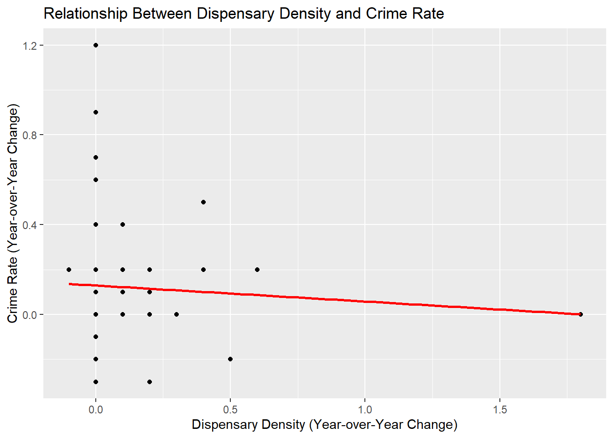
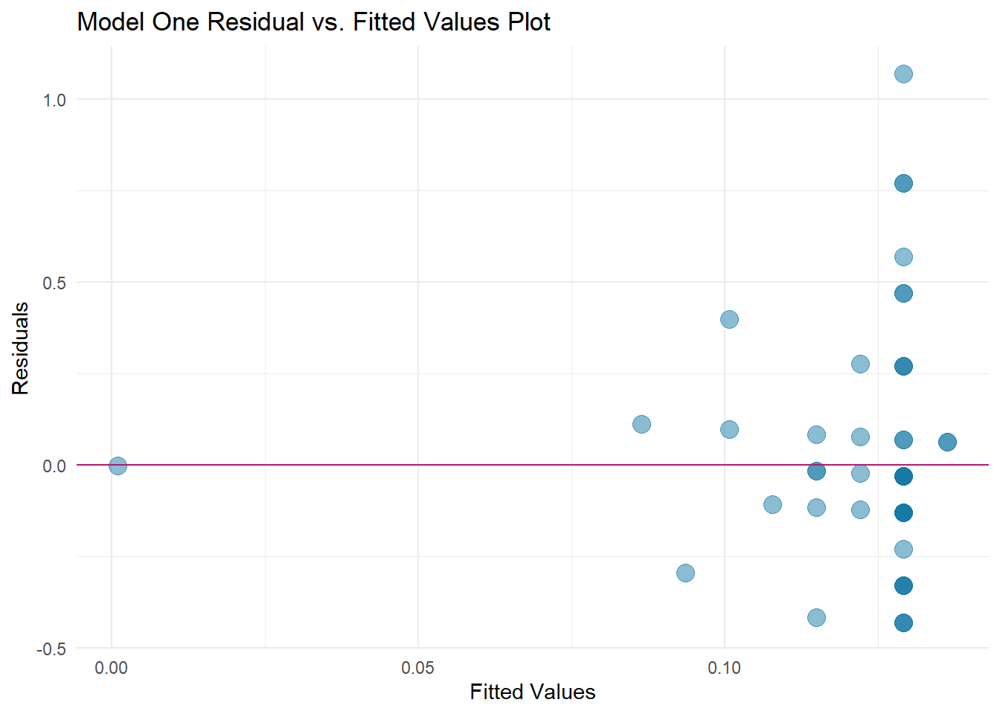
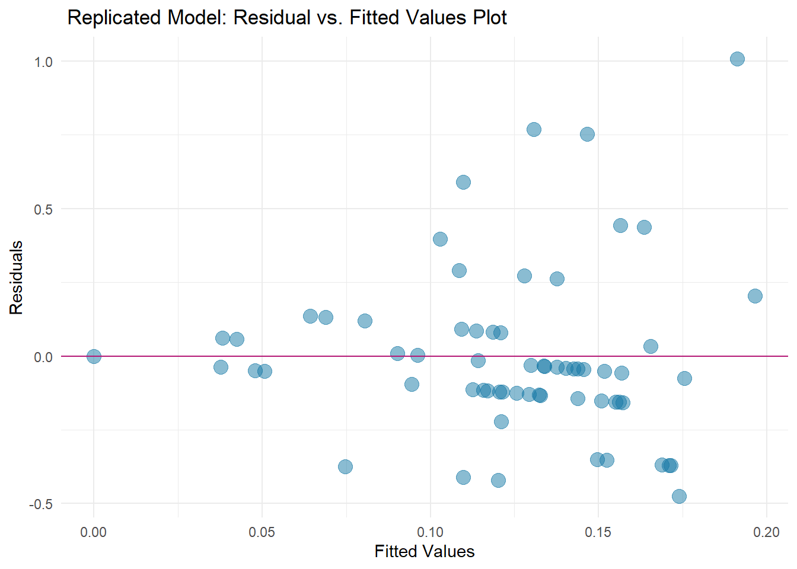

implements all the transformed data into two linear models for evaluation
plots the residuals and linear regression
This is where it all comes together! After all the time and effort to construct my data pipeline and calculating variables…. running the linear model function was so simple yet illuminating.
Fitting Linear Model One:
where the average change in crime rate is the dependent variable, and the average change in dispensary density is the independent variable.
Code
# import datasource("~/gvsu/winter 23/CIS 635/NIMBY/cleaning/linear_model/variables/crime and dispenaries per capita.R")
── Attaching packages ─────────────────────────────────────── tidyverse 1.3.2 ──
✔ ggplot2 3.4.0 ✔ purrr 1.0.1
✔ tibble 3.2.1 ✔ dplyr 1.1.1
✔ tidyr 1.2.1 ✔ stringr 1.5.0
✔ readr 2.1.3 ✔ forcats 0.5.2
── Conflicts ────────────────────────────────────────── tidyverse_conflicts() ──
✖ dplyr::filter() masks stats::filter()
✖ dplyr::lag() masks stats::lag()
Attaching package: 'lubridate'
The following objects are masked from 'package:base':
date, intersect, setdiff, union
`summarise()` has grouped output by 'Geography'. You can override using the `.groups` argument.
Getting data from the 2010-2014 5-year ACS
Code
model1 <-lm(linear_variables$crime_yoy_avg ~ linear_variables$dsp_yoy_avg, data = linear_variables)
Warning: `qplot()` was deprecated in ggplot2 3.4.0.
`geom_smooth()` using formula = 'y ~ x'

Code
summary(model1)
Call:
lm(formula = linear_variables$crime_yoy_avg ~ linear_variables$dsp_yoy_avg,
data = linear_variables)
Residuals:
Min 1Q Median 3Q Max
-0.42923 -0.12923 -0.02923 0.07077 1.07077
Coefficients:
Estimate Std. Error t value Pr(>|t|)
(Intercept) 0.12923 0.03807 3.394 0.0012 **
linear_variables$dsp_yoy_avg -0.07123 0.14326 -0.497 0.6208
---
Signif. codes: 0 '***' 0.001 '**' 0.01 '*' 0.05 '.' 0.1 ' ' 1
Residual standard error: 0.29 on 62 degrees of freedom
Multiple R-squared: 0.003972, Adjusted R-squared: -0.01209
F-statistic: 0.2472 on 1 and 62 DF, p-value: 0.6208
Regarding model 1, the shape of the graph reveals:
It appears that Model One is not a good fit for the data based on the negative initial adjusted R-squared value. Other insights I see from these results, include a slope of low magnitude indicating a weak relationship between variables. Additionally, the p-value of 0.62 is not strong enough to reject the null hypothesis at the level of significance (0.05)
because this linear model is so difficult to look at, I’m going to compare the residuals between the two models
Code
ggplot(model1, aes(x = .fitted, y = .resid)) +geom_point(alpha =0.5, size =4, color ="#1679A6" ) +geom_hline(yintercept =0 , color ="#B41876") +labs(title='Model One Residual vs. Fitted Values Plot',x ="Fitted Values", y ="Residuals") +theme_minimal()

Model Two, adding in explanatory variables:
Race, Ethnicity, Poverty Rate, Employment
Code
# y = YOY crime at the county levelmodel2 <-lm(linear_variables$crime_yoy_avg ~ linear_variables$dsp_yoy_avg + linear_variables$pct_poverty_rate + linear_variables$pct_black + linear_variables$pct_hispanic + linear_variables$employeed_pop,data = linear_variables)
Code
library(ggplot2)# Create a scatterplot of the residuals vs fitted valuesmode2_plot <-ggplot(model2, aes(x = .fitted, y = .resid)) +geom_point(alpha =0.5, size =4, color ="#1679A6" ) +geom_hline(yintercept =0 , color ="#B41876") +labs(title=' Replicated Model: Residual vs. Fitted Values Plot',x ="Fitted Values", y ="Residuals") +theme_minimal()ggsave("images/model2.png")
Saving 7 x 5 in image
Code
mode2_plot

Code
summary(model2)
Call:
lm(formula = linear_variables$crime_yoy_avg ~ linear_variables$dsp_yoy_avg +
linear_variables$pct_poverty_rate + linear_variables$pct_black +
linear_variables$pct_hispanic + linear_variables$employeed_pop,
data = linear_variables)
Residuals:
Min 1Q Median 3Q Max
-0.47400 -0.13238 -0.04318 0.08269 1.00885
Coefficients:
Estimate Std. Error t value Pr(>|t|)
(Intercept) 8.627e-02 1.145e-01 0.753 0.454
linear_variables$dsp_yoy_avg -6.323e-02 1.543e-01 -0.410 0.683
linear_variables$pct_poverty_rate 6.074e-01 9.582e-01 0.634 0.529
linear_variables$pct_black -2.071e-01 1.514e+00 -0.137 0.892
linear_variables$pct_hispanic -1.692e-01 3.680e-01 -0.460 0.647
linear_variables$employeed_pop -2.045e-07 4.720e-07 -0.433 0.666
Residual standard error: 0.2976 on 58 degrees of freedom
Multiple R-squared: 0.01903, Adjusted R-squared: -0.06554
F-statistic: 0.225 on 5 and 58 DF, p-value: 0.9502
Interpreting the Results | Mode 2
Model 2 is also not an ideal fit for the data set, and I draw the same conclusions as above. Additionally looking at the residual vs predicted graph, the plots are not evenly distributed vertically, so model two is also not a good fit for this dataset.